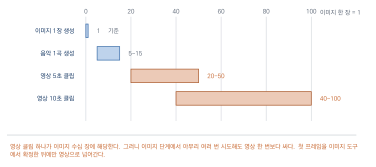
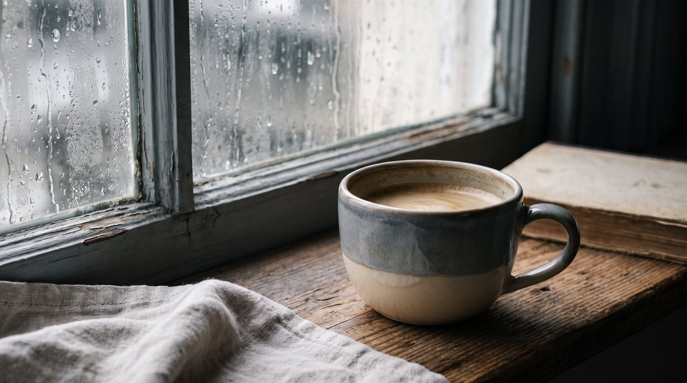
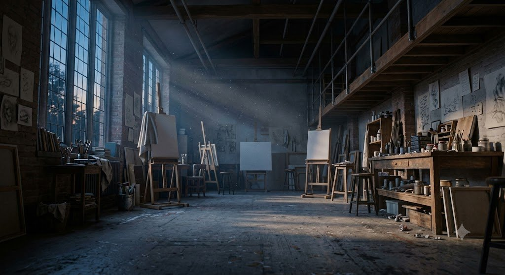

AI 영상 만들기
이 장을 마치면
- 영상 생성의 원리와 현재의 한계를 설명할 수 있다.
- 무료 크레딧을 효율적으로 쓰는 작업 계획을 세울 수 있다.
- 정지 이미지를 의도한 방향으로 움직이게 할 수 있다.
- 여러 클립을 편집으로 이어 하나의 영상을 완성할 수 있다.
- 자막·음악·내레이션을 더해 마무리할 수 있다.
영상은 이 책이 다루는 매체 가운데 가장 비싸고 가장 빠르게 변한다. 무료 크레딧은 몇 번 시도하면 동나고, 결과는 매번 예측하기 어렵다. 그래서 이 장은 다른 장보다 계획과 절약에 많은 지면을 쓴다. 아무 생각 없이 생성 버튼을 누르는 것이 가장 비싼 방법이다.
11.1 영상 생성의 원리와 한계
영상은 이 책이 다루는 매체 가운데 가장 비싸고 가장 빠르게 변한다. 무료 크레딧은 몇 번 시도하면 동나고, 결과는 예측하기 어렵다. 그래서 이 장은 다른 장보다 계획과 절약에 많은 지면을 쓴다.
시간 축이 하나 더 붙었다
원리부터. 영상 생성은 3.2절의 확산 모델을 시간 축으로 확장한 것이다.
이미지 생성이 잡음에서 한 장의 그림을 꺼내는 일이라면, 영상 생성은 잡음에서 여러 장의 그림을 한꺼번에 꺼내되 서로 이어지도록 만드는 일이다. 그냥 여러 장을 따로 만들면 프레임마다 전혀 다른 그림이 되어 버리므로, 앞뒤 프레임이 서로를 참고하도록 학습시킨다.
왜 길어질수록 무너지는가
여기서 한계가 나온다. 프레임 수가 늘어날수록 서로 맞춰야 할 관계가 폭발적으로 늘어난다. 계산량이 감당이 안 되므로 모델은 가까운 프레임끼리만 강하게 맞추고, 멀리 떨어진 프레임 사이는 느슨하게 둔다.
그 결과가 우리가 실제로 보는 현상이다.
- 처음과 끝의 인물 얼굴이 미묘하게 다르다
- 배경의 물건이 사라지거나 새로 생긴다
- 걷던 사람의 다리가 도중에 바뀐다
- 글자가 프레임마다 다른 모양으로 일렁인다
7.5절에서 이미지의 캐릭터 일관성 문제를 다뤘는데, 영상에서는 그 문제가 한 클립 안에서 일어난다. 그래서 대처도 같다. 짧게 만들고 이어 붙인다.
현실적인 범위
지금 무료 또는 저렴한 범위에서 기대할 수 있는 것을 솔직하게 적어 둔다. 이 수치는 빠르게 바뀌므로 대략의 감으로만 받아들이자.
| 항목 | 현실 |
|---|---|
| 한 클립 길이 | 대체로 5–10초. 길게 뽑을수록 무너진다 |
| 품질 | 짧은 클립은 인상적. 자세히 보면 어색한 부분이 있다 |
| 인물 | 얼굴이 작을수록 안전. 클로즈업은 어렵다 |
| 손·글자 | 여전히 취약 |
| 정확한 동작 | 지시대로 안 되는 경우가 많다 |
| 카메라 움직임 | 비교적 잘 통한다 |
표 11.1에서 마지막 두 줄의 대비가 실무의 지침이 된다. 피사체를 움직이게 하는 것보다 카메라를 움직이는 편이 훨씬 안정적이다. 인물이 가만히 있고 카메라가 천천히 다가가는 클립은 잘 나오지만, 인물이 특정 동작을 하는 클립은 자주 실패한다.
두 가지 방식
문장으로 영상 만들기(text-to-video)는 프롬프트만 주고 영상을 얻는다. 자유롭지만 통제가 어렵다. 무엇이 나올지 열어 보기 전까지 모른다.
이미지를 움직이게 하기(image-to-video)는 시작 이미지를 주고 그것을 움직이게 한다. 첫 프레임이 확정되어 있으므로 결과의 절반은 이미 정해진 셈이다.
실무의 표준은 후자다. 이유는 셋이다. 첫째, 6–7장에서 익힌 이미지 제어 기술이 그대로 쓰인다. 둘째, 마음에 드는 이미지가 나올 때까지는 훨씬 싸게 시험할 수 있다. 셋째, 여러 클립의 화풍과 색감이 자연스럽게 통일된다.

그림 11.1의 흐름이 이 장의 뼈대다. 영상 도구에 들어가기 전에 이미지 단계에서 최대한 확정한다. 이것이 크레딧을 아끼는 가장 확실한 방법이기도 하다.
그래서 무엇을 만드는가
한계를 알고 나면 만들 수 있는 것의 범위가 보인다. 학기 과제로 현실적인 것들이다.
- 짧은 홍보 영상 30초–1분. 클립 6–10개를 이어 붙인다
- 9장 웹툰의 영상 버전. 컷을 움직이게 하고 내레이션을 얹는다
- 분위기 영상. 이야기 없이 장면만 이어지는 짧은 영상
- 제품·작품 소개. 정지 이미지에 카메라 움직임만 준 영상
마지막 항목이 가장 안전하고 실용적이다. 움직임이 적어 실패 확률이 낮고, 결과가 안정적이며, 실제로 널리 쓰이는 형식이다.
반대로 학기 과제로 피할 것도 명확하다. 인물이 여럿 나오는 대화 장면, 복잡한 동작이 필요한 장면, 3분이 넘는 영상. 시간과 크레딧이 감당되지 않는다.
11.2 도구 지형과 크레딧 관리
이 절은 다른 도구 소개 절과 성격이 다르다. 절약이 주제이기 때문이다. 아무 생각 없이 생성 버튼을 누르는 것이 이 장에서 가장 비싼 방법이다.
도구
영상 생성과 편집 기능이 한곳에 있다. 가입 시 일회성 크레딧을 주는 방식이 일반적이라 한 번 다 쓰면 회복되지 않을 수 있다. 아껴 쓸 계획을 세우고 시작하자.
이미지를 움직이게 하는 작업에 무난하다. 월 단위로 생성 횟수가 주어지는 방식이 일반적이다.
매일 크레딧이 회복되는 방식이라 무료 한도가 비교적 넉넉한 편이다. 학기 과제에 적합하다. 대기 시간이 길 수 있다.
생성 도구가 아니라 편집 도구다. 클립을 이어 붙이고, 자동 자막을 만들고, 음악을 얹는 작업을 무료 범위에서 할 수 있다. 11.5절과 11.7절에서 쓴다.
한 번에 얼마나 드는가
정확한 수치는 서비스마다 다르고 자주 바뀌지만, 상대적 비용은 알아 둘 만하다.
| 작업 | 상대 비용 | 메모 |
|---|---|---|
| 이미지 1장 생성 | 1 | 기준 |
| 음악 1곡 생성 | 5–15 | |
| 영상 5초 클립 | 20–50 | 이미지의 수십 배 |
| 영상 10초 클립 | 40–100 | 길이에 비례하거나 그 이상 |
| 고해상도 출력 | 2–4배 | 최종 단계에서만 |
표 11.2의 셋째 줄이 이 장의 모든 판단을 지배한다. 영상 클립 하나가 이미지 수십 장에 해당한다. 그러니 이미지 단계에서 아무리 여러 번 시도해도 영상 한 번보다 싸다.
크레딧을 아끼는 다섯 가지
1. 이미지에서 확정한다. 11.1절의 결론이다. 첫 프레임이 마음에 들 때까지 이미지 도구에서 반복하고, 확정된 뒤에만 영상으로 넘어간다.
2. 저해상도·짧은 길이로 먼저. 대부분의 도구가 설정을 낮출 수 있다. 움직임이 의도대로 나오는지만 확인한 뒤, 확정된 프롬프트로 한 번만 고품질 생성한다.
3. 실패할 프롬프트를 미리 거른다. 11.1절의 표를 참고해 안 될 것은 시도하지 않는다. 손이 화면 가득 나오는 클립, 글자가 중요한 클립, 복잡한 동작은 대개 실패한다.
4. 한 번에 여러 개가 나오면 다 저장한다. 지금 안 쓸 것 같아도 나중에 편집에서 쓸 수 있다. 다시 만들면 또 크레딧이다.
5. 여러 서비스의 무료 한도를 나눠 쓴다. 한 곳에서 다 쓰지 말고, 매일 회복되는 서비스를 주력으로 삼고 일회성 크레딧은 결정적인 순간에 아껴 둔다.
작업 계획표
시작하기 전에 반드시 쓴다.
목표 영상 길이: ______초
필요한 클립 수: ______개 (평균 5초 기준)
클립별 계획
번호 | 내용 | 방식 | 위험도 | 예상 시도
-----+-----------------+-----------+--------+----------
1 | 작업실 전경 | img2video | 낮음 | 1~2회
2 | 붓을 드는 손 | img2video | 높음 | 3~4회
3 | 창밖 풍경 | img2video | 낮음 | 1회
...
총 예상 시도: ______회
가진 크레딧으로 가능한 횟수: ______회
여유: ______회 (부족하면 계획을 줄인다)위험도 열이 핵심이다. 높음으로 표시한 클립은 (1) 먼저 시도하고 (2) 안 되면 다른 것으로 대체할 계획을 미리 세운다. 9.5절에서 어려운 컷부터라고 한 것과 같은 원칙이다.
크레딧이 떨어졌다면
학기 중에 반드시 겪게 될 상황이다. 대안이 있다.
- 정지 이미지에 움직임 효과를 준다. 편집 도구에서 이미지를 천천히 확대하거나 이동시키는 효과(켄 번스 효과)를 쓴다. 크레딧이 전혀 들지 않고, 잘 쓰면 생성 영상보다 안정적이다.
- 직접 찍는다. 휴대폰으로 찍은 실사 영상을 섞는다. 오히려 대비가 생겨 좋아지는 경우가 많다.
- 클립을 재사용한다. 같은 클립을 다른 속도로, 다르게 잘라, 좌우 반전해서 쓰면 다른 클립처럼 보인다.
- 다음 날을 기다린다. 매일 회복되는 서비스라면 계획을 이틀로 나눈다.
첫 번째 항목을 얕보지 말자. 잘 만든 켄 번스 효과가 어설픈 생성 영상보다 낫다. 실제 다큐멘터리와 홍보 영상에서 널리 쓰이는 기법이며, 11.1절에서 말한 제품·작품 소개 유형에서는 오히려 표준이다.
11.3 이미지를 움직이게 하기
실무의 표준 방식이다. 6–7장에서 만든 이미지가 여기서 재료가 된다.
두 가지 움직임을 구분한다
모션 프롬프트를 쓸 때 가장 중요한 구분이다.
카메라 움직임은 화면 자체가 움직이는 것이다. 장면은 그대로 있고 보는 위치가 바뀐다.
피사체 움직임은 화면 안의 대상이 움직이는 것이다. 사람이 걷고, 나뭇잎이 흔들리고, 물이 흐른다.
11.1절에서 말했듯 카메라 움직임이 훨씬 안정적이다. 장면을 새로 그릴 필요가 없기 때문이다. 반면 피사체 움직임은 매 프레임 형태를 다시 만들어야 하므로 어긋나기 쉽다.
slow zoom in / out 천천히 다가가거나 물러난다
pan left / right 좌우로 훑는다
tilt up / down 위아래로 훑는다
dolly in 카메라가 앞으로 이동 (줌과 다르다)
orbit around the subject 대상 주위를 돈다
static shot 움직이지 않는다
handheld, subtle shake 손으로 든 듯 미세하게 흔들림gentle wind through the leaves 나뭇잎이 흔들린다
steam rising from the cup 김이 오른다
rain falling 비가 내린다
the person slowly turns their head 고개를 돌린다
fabric fluttering 천이 나부낀다
water rippling 물결이 인다피사체 움직임은 작고 반복적인 것이 잘 나온다. 김, 바람, 물결, 촛불처럼 형태가 크게 바뀌지 않는 움직임이다. 반면 걷기, 손동작, 표정 변화처럼 형태가 크게 바뀌는 움직임은 실패율이 높다.
모션 프롬프트 쓰기
이미지가 이미 있으므로 프롬프트는 움직임에만 집중한다. 장면을 다시 묘사할 필요가 없다.
slow zoom in toward the window,
gentle steam rising from the coffee cup,
soft rain streaking down the glass,
everything else remains still,
subtle and calm motion
everything else remains still이 유용하다. 지시하지 않은 부분까지 모델이 움직이려 드는 것을 막는다.
한 클립에 움직임을 두세 개까지만 넣는다. 6.6절에서 이미지 프롬프트의 통제 요소가 대여섯 개가 한계라고 했는데, 영상에서는 그보다 적다. 카메라 하나 + 피사체 하나 정도가 안정적이다.
잘 움직이는 이미지
모든 이미지가 똑같이 잘 움직이는 것은 아니다. 애초에 잘 움직일 이미지를 골라 두면 실패가 줄어든다.
| 잘 움직인다 | 어렵다 |
|---|---|
| 인물이 작게 나오는 넓은 화면 | 얼굴 클로즈업 |
| 배경에 여백이 있는 구도 | 화면이 요소로 꽉 찬 이미지 |
| 움직일 만한 것이 명확 (물, 연기, 천) | 정지된 딱딱한 물체만 |
| 단순한 화풍 | 세밀한 사실 묘사 |
| 손이 안 보이거나 작음 | 손이 크게 나옴 |
| 글자가 없음 | 간판·표지 등 글자가 있음 |
표 11.3의 왼쪽 조건에 맞는 이미지를 6–7장 단계에서 미리 만들어 두는 것이 요령이다. 영상으로 만들 계획이라면 이미지를 만들 때부터 그것을 염두에 둔다.
움직임의 세기
대부분의 도구에 모션 강도 설정이 있다. 이름은 motion strength, motion amount 등으로 다르다.
- 낮게: 거의 안 움직인다. 안전하지만 밋밋할 수 있다
- 중간: 대개 여기서 시작한다
- 높게: 역동적이지만 형태가 무너질 확률이 크게 오른다
낮은 값에서 시작해 조금씩 올린다. 처음부터 높게 두면 크레딧만 쓰고 못 쓸 결과가 나온다. 그리고 대부분의 용도에서는 생각보다 적은 움직임으로 충분하다.
첫 프레임과 마지막 프레임
일부 도구는 시작 이미지와 끝 이미지를 모두 받는다. 그 사이를 채워 주는 방식이다.
이 기능이 있다면 통제력이 크게 올라간다. 예를 들어 같은 장면의 낮 이미지와 밤 이미지를 각각 만들어 주면, 시간이 흐르는 클립을 얻을 수 있다.
7.2절에서 배운 이미지 제어 기술이 여기서 두 배로 쓰인다. 두 이미지의 구도가 일치할수록 결과가 자연스러우므로, 같은 시드로 만들거나 하나를 다른 하나의 참조로 삼는다.
실패했을 때의 판단
크레딧이 한정되어 있으므로 언제 포기할지를 정해 두어야 한다.
1회차 결과를 보고
□ 방향은 맞는데 세부가 아쉽다 → 설정만 조금 바꿔 1회 더
□ 움직임이 지시와 전혀 다르다 → 프롬프트를 단순하게 줄여 1회 더
□ 형태가 무너진다 → 모션 강도를 낮춰 1회 더
□ 이미지 자체가 영상화에 부적합 → 이미지를 다시 만든다 (영상 시도 중단)
3회 시도해도 안 되면
→ 그 클립을 포기하고 다른 방식으로 대체한다
(정지 이미지 + 켄 번스 효과 / 다른 장면으로 교체)마지막 줄이 중요하다. 9.5절에서 맞지 않는 컷은 교체하라고 한 것과 같다. 한 클립에 매달려 크레딧을 다 쓰는 것이 이 장에서 가장 흔한 실패다.
11.4 문장으로 영상 만들기
이미지를 거치지 않고 프롬프트만으로 영상을 만드는 방식이다. 통제가 어렵지만, 이미지로 만들기 어려운 장면이나 빠른 탐색에는 쓸모가 있다.
언제 쓰는가
- 빠른 탐색. 어떤 장면이 나올지 대략 보고 싶을 때
- 복잡한 카메라 움직임. 정지 이미지에서 출발해서는 얻기 어려운 공간 이동
- 추상적·질감 중심 영상. 구체적 형태가 중요하지 않은 배경 영상
반대로 정확한 대상이 나와야 하는 장면에는 쓰지 않는다. 특정 인물, 특정 장소, 정해진 사양이 있는 경우는 이미지를 거치는 편이 확실하다.
프롬프트 구성
이미지 프롬프트(4.2절)에 움직임이 하나 더 붙는 형태다.
1. 장면 무엇이 있는가
2. 카메라 샷 크기, 앵글, 렌즈
3. 조명 빛의 성격
4. 움직임 카메라와 피사체 (11.3절의 구분)
5. 질감 화풍, 필름 느낌, 색조an empty art studio at dawn, dust floating in the air,
wide shot, low angle, 35mm lens,
soft blue morning light through a tall window,
slow dolly forward, dust particles drifting gently,
cinematic, muted color grading, subtle film grain
6.4절에서 익힌 카메라·조명 어휘가 그대로 쓰인다는 점에 주목하자. 이미지에서 쌓은 어휘가 영상에서 재사용된다.
여러 클립의 통일성
가장 큰 문제다. 클립마다 따로 만들면 화풍과 색감이 제각각이 된다.
공통 문구를 고정한다. 9.3절에서 웹툰 컷에 스타일 문구를 똑같이 붙인 것과 같다.
[스타일 고정 문구]
cinematic, muted color grading with cool shadows,
subtle film grain, 35mm lens look, shallow depth of field
각 클립의 프롬프트 = [장면 고유 묘사] + [공통 문구]그래도 남는 차이는 편집에서 잡는다. 9.5절에서 색조를 후보정으로 통일하라고 한 것이 여기서도 그대로 통한다. 편집 도구에서 모든 클립에 같은 색보정을 적용하면 훨씬 한 덩어리로 보인다.
클립 간 통일성을 생성 단계에서 완벽히 맞추려 하지 말자. 시간과 크레딧이 몇 배로 든다. 대략 맞춰 놓고 편집에서 마무리하는 것이 실무의 순서다.
실패 유형
| 증상 | 대처 |
|---|---|
| 장면은 맞는데 움직임이 없다 | 모션 강도를 올린다. 움직임 문구를 구체적으로 |
| 움직임이 과해 형태가 뭉개진다 | 모션 강도를 낮춘다. 움직임을 하나만 지정 |
| 지시한 요소가 없다 | 프롬프트 앞쪽으로 옮긴다. 요소를 줄인다 |
| 중간에 장면이 통째로 바뀐다 | 길이를 줄인다. 프롬프트를 단순하게 |
| 인물의 얼굴이 변한다 | 인물을 작게 잡거나 뒷모습으로 |
| 매번 전혀 다른 것이 나온다 | 이미지를 먼저 확정하고 img2video로 전환 |
표 11.4의 마지막 줄이 이 절의 결론이다. 문장 생성으로 두세 번 시도해 방향이 안 잡히면 이미지 방식으로 옮긴다. 고집하다 크레딧을 다 쓰는 것보다 낫다.
탐색용으로 쓰는 법
크레딧이 넉넉하지 않다면 문장 생성을 탐색에만 쓰는 방법도 있다.
- 저해상도·짧은 길이로 여러 방향을 시도한다
- 그중 방향이 맞는 클립의 한 프레임을 캡처한다
- 그 프레임을 이미지 도구에 넣어 다듬는다
- 다듬은 이미지로 img2video 생성한다
돌아가는 것 같지만 실제로는 크레딧이 덜 든다. 2번에서 얻은 프레임이 모델이 이 프롬프트를 어떻게 이해했는지를 보여 주기 때문에, 이후 작업의 방향이 분명해진다.
11.5 여러 클립을 이어 붙이기
5초짜리 클립 여덟 개는 아직 영상이 아니다. 이어 붙여 하나로 만드는 편집 단계가 남았고, 여기서 완성도가 결정된다.
편집 도구
무료로 쓸 수 있는 것들이다. 이 책의 과제는 어느 것으로도 완주할 수 있다.
- CapCut – 자동 자막이 강하고 한국어를 잘 인식한다. 세로 영상 작업에 편리하다
- Canva – 이미지 작업과 이어서 하기 좋다. 템플릿이 많다
- 클립챔프 – 윈도우에 기본 탑재된 경우가 있다
- 다빈치 리졸브 – 전문가용이지만 무료 버전이 강력하다. 색보정이 뛰어나다
순서 정하기
클립을 어떤 순서로 놓을지가 첫 결정이다. 9.3절의 컷 구성과 같은 논리다.
0:00-0:03 시작 가장 인상적인 클립. 시선을 붙잡는다
0:03-0:10 도입 상황을 보여 준다 (클립 2개)
0:10-0:25 전개 본론 (클립 3개)
0:25-0:33 전환 분위기가 바뀌는 지점 (클립 1개)
0:33-0:40 마무리 여운 + 로고·정보 (클립 1개)첫 3초가 웹툰의 1컷과 같은 역할을 한다. SNS에서 첫 3초를 못 넘기면 나머지는 보이지 않는다.
컷 편집의 기본
길이를 다양하게. 모든 클립을 5초씩 균등하게 자르면 지루하다. 어떤 것은 1초, 어떤 것은 8초로 리듬을 만든다. 긴장이 높아지는 구간에서는 짧게 자르는 것이 기본이다.
점프컷을 피한다. 비슷한 구도의 두 클립을 붙이면 화면이 튄다. 샷 크기나 각도가 확실히 다른 클립을 이어 붙인다. 6.4절에서 샷 크기를 섞으라고 한 이유가 여기서도 나온다.
액션이 이어지게. 앞 클립에서 시작된 움직임이 뒤 클립에서 이어지면 자연스럽다. 왼쪽으로 팬하던 카메라가 다음 클립에서도 왼쪽으로 움직이는 식이다.
전환 효과는 최소한으로. 편집 도구에 화려한 전환 효과가 많지만, 대부분 촌스러워 보인다. 그냥 잘라 붙이기(컷)가 기본이고, 필요하면 짧은 디졸브나 검은 화면 정도만 쓴다.
초보자의 영상에서 가장 눈에 띄는 표시가 과한 전환 효과다. 회전하고 날아가고 흩어지는 효과를 클립마다 넣으면 내용이 아니라 효과만 보인다. 전환은 안 보이는 것이 잘된 것이다.
색조 통일
9.5절에서 웹툰 컷에 했던 작업을 영상에도 한다. 오히려 영상에서 더 중요하다. 클립이 이어서 재생되므로 색이 튀면 즉시 눈에 띈다.
1. 가장 마음에 드는 클립 하나를 기준으로 정한다
2. 나머지 클립의 밝기·대비를 기준에 맞춘다
3. 전체에 같은 색보정(LUT 또는 조정 레이어)을 적용한다
4. 처음부터 끝까지 재생하며 튀는 지점을 찾아 개별 조정한다4번을 건너뛰지 말자. 정지 화면으로 비교할 때는 몰랐던 차이가 재생하면 보인다.
속도 조절
생성된 클립의 움직임이 어색할 때 유용한 요령이다.
- 느리게: 움직임의 어색함이 덜 보인다. 분위기도 차분해진다
- 빠르게: 어색한 구간을 빨리 지나간다
- 일부만: 이상해지는 마지막 1초를 잘라 낸다
마지막 항목이 가장 자주 쓰인다. 11.1절에서 말했듯 클립은 뒤로 갈수록 무너지므로, 앞의 3–4초만 쓰고 나머지를 버리는 것이 보통이다. 5초를 만들어 3초를 쓴다고 생각하면 편하다.
클립 재사용
11.2절에서 언급한 절약 방법을 구체적으로 보자. 같은 클립을 다르게 보이게 하는 법이다.
- 다른 구간을 자른다 (앞부분과 뒷부분)
- 속도를 바꾼다
- 좌우를 뒤집는다 (글자가 없을 때만)
- 확대해서 다른 부분을 보여 준다
- 색보정을 다르게 한다 (낮 → 밤)
이것은 편법이 아니라 실제 영상 제작의 표준 기법이다. 촬영 분량이 부족할 때 편집자가 늘 하는 일이며, 잘 쓰면 아무도 눈치채지 못한다.
정지 이미지 섞기
11.2절의 켄 번스 효과다. 생성 클립 사이에 정지 이미지를 섞어도 전혀 어색하지 않다.
1. 편집 도구에 이미지를 넣는다
2. 시작 시점의 크기·위치를 정한다 (예: 110% 확대, 왼쪽)
3. 끝 시점의 크기·위치를 정한다 (예: 100%, 오른쪽)
4. 5~8초에 걸쳐 천천히 이동하게 한다
요령: 움직임은 아주 느리게. 빠르면 싸구려처럼 보인다전체 클립의 3분의 1 정도를 이렇게 처리해도 완성도에 문제가 없다. 크레딧은 3분의 1 줄어든다.
11.6 립싱크와 아바타
인물이 말하는 영상을 만드는 기술이다. 유용하지만 이 책에서 가장 조심스럽게 다뤄야 할 영역이기도 하다.
먼저 지킬 것
5.4절을 반드시 다시 읽고 시작하자. 여기서는 원칙만 다시 못 박는다.
실존 인물의 얼굴로 말하는 영상을 만들지 않는다. 예외는 없다.
실습에 쓸 수 있는 것은 셋뿐이다.
- 본인 얼굴
- 이미지 생성으로 만든 가상 인물
- 구체적 동의를 받은 사람 (무엇을 만들지, 어디에 공개할지 정해서)
친구 얼굴로 하는 장난은 5.4절에서 말한 대로 가장 흔한 사고 경로다. 만들지 않는다.
작동 방식
립싱크 도구는 두 가지를 받는다. 인물 이미지 또는 영상과 음성. 그리고 음성에 맞춰 입 모양을 만들어 낸다.
음성은 10.5절에서 만든 것을 쓴다. 자기 목소리를 녹음해도 되고, 음성 합성으로 만들어도 된다.
1. 인물 이미지를 준비한다 (정면, 입이 잘 보이게)
2. 원고를 쓰고 음성을 만든다 (10.5절)
3. 립싱크 도구에 둘을 넣는다
4. 결과를 확인하고 어색하면 음성이나 이미지를 조정한다잘 나오는 조건
| 잘 나온다 | 어렵다 |
|---|---|
| 정면을 보는 얼굴 | 옆모습, 고개 숙임 |
| 입이 또렷하게 보임 | 마스크, 손으로 가림, 수염이 많음 |
| 얼굴이 화면의 적당한 크기 | 너무 작거나 너무 큼 |
| 조명이 고른 얼굴 | 그림자가 얼굴을 반쯤 덮음 |
| 단순한 배경 | 복잡하게 움직이는 배경 |
한국어 립싱크
영어보다 어렵다. 학습 데이터의 차이 때문이다. 나타나는 문제와 대처는 이렇다.
- 입 모양이 발음과 안 맞는다. 대체로 어쩔 수 없다. 얼굴을 조금 작게 잡으면 덜 눈에 띈다
- 입만 움직이고 표정이 없다. 어색함의 주된 원인이다. 자연스러운 고개 움직임이 있는 영상을 입력으로 쓰면 낫다
- 긴 문장에서 어긋난다. 짧은 문장으로 나눠 여러 클립으로 만들고 이어 붙인다
한국어 립싱크의 완성도가 아직 높지 않으므로, 말하는 인물을 화면 가득 보여 주는 구성은 피하는 편이 좋다. 인물을 작게 두거나, 말하는 동안 다른 장면을 보여 주고 목소리만 얹는 방식이 훨씬 안정적이다.
목소리만 쓰는 대안
사실 대부분의 경우 립싱크가 필요 없다. 내레이션으로 충분하다.
- 화면에는 장면과 이미지를 보여 준다
- 목소리로 설명한다
- 말하는 사람의 얼굴은 나오지 않거나, 시작과 끝에만 잠깐
다큐멘터리와 대부분의 홍보 영상이 이 방식이다. 만들기 쉽고, 어색할 위험이 없고, 5.4절의 문제도 생기지 않는다. 학기 과제에서는 이쪽을 기본으로 삼기를 권한다.
아바타 서비스
미리 만들어 둔 가상 인물이 말해 주는 서비스들이 있다. 교육 영상이나 안내 영상에 쓴다.
장점은 안정적이라는 것이다. 그 인물로 학습된 모델이라 입 모양과 표정이 자연스럽다. 단점은 누구나 같은 인물을 쓴다는 것이다. 여러 영상에서 같은 아바타를 보게 되면 신뢰가 떨어진다.
아바타 영상을 쓸 때는 그것이 실제 사람이 아님을 밝히는 것이 좋다. 시청자가 진짜 사람으로 오인한 뒤 알게 되면 배신감을 느낀다. 5.6절의 표기 원칙이 여기서도 적용된다.
교육·홍보에서의 활용
정당하고 유용한 쓰임도 분명히 있다.
- 다국어 안내. 같은 내용을 여러 언어로 만들 때
- 반복 갱신되는 안내. 내용이 자주 바뀌어 매번 촬영하기 어려울 때
- 출연자가 없을 때. 학생 개인 작업에서 배우를 구할 수 없을 때
- 본인이 등장하기 어려울 때. 촬영 환경이나 개인적 이유로
이런 경우에는 5.4절의 원칙(본인·가상 인물·동의받은 사람)을 지키는 한 문제가 없다. 기술 자체가 아니라 누구의 얼굴을 쓰느냐가 문제라는 점을 다시 확인해 두자.
11.7 자막, 음악, 마무리
마지막 단계다. 여기서 하는 작업이 완성도의 절반을 만든다.
자막은 선택이 아니다
SNS 영상의 상당수가 소리를 끈 채 재생된다. 자막이 없으면 아무 말도 전달되지 않는다.
편집 도구의 자동 자막 기능을 쓴다. 한국어 인식률이 꽤 높지만 반드시 교정해야 한다.
□ 고유명사 (학과명, 사람 이름, 지명)
□ 숫자와 단위
□ 외래어 표기
□ 문장 부호 (물음표, 말줄임표)
□ 줄바꿈 위치 (의미 단위로 끊기)
□ 표시 시간 (읽을 시간이 충분한가)마지막 두 항목을 놓치기 쉽다. 자동 생성은 소리에 맞춰 자막을 끊으므로 의미가 어색하게 잘리는 경우가 있다.
읽히는 자막 디자인
9.6절의 원칙이 그대로 적용된다.
- 크게. 휴대폰에서 확인한다
- 대비를 확실히. 흰 글자 + 검은 외곽선, 또는 반투명 막
- 아래쪽 중앙. 다만 SNS UI에 가려지는 영역을 피한다
- 한 줄에 짧게. 화면 폭의 80% 이내, 최대 두 줄
- 서체는 하나. 강조는 크기나 색으로
세로 영상에서는 아래쪽 15–20%가 플랫폼 UI에 가려진다. 자막을 화면 맨 아래에 두면 잘린다. 조금 위로 올려 배치하고, 완성 후 실제 계정에서 미리보기로 확인한다.
음악 얹기
10장에서 만든 음악을 여기서 쓴다. 10.5절의 음량 기준을 다시 적용한다.
1. 내레이션 트랙을 먼저 놓고 기준 음량을 정한다
2. 배경음악을 그 아래 깔고 20~30% 수준으로 낮춘다
3. 말이 나오는 구간에서 음악을 더 낮춘다 (더킹)
4. 효과음을 필요한 지점에 넣는다
5. 시작과 끝에 페이드를 준다
6. 전체를 한 번 끝까지 들으며 튀는 곳을 잡는다5번의 끝 페이드를 잊지 말자. 10.4절에서 말했듯 음악이 뚝 끊기는 것이 아마추어 영상의 가장 흔한 표시다.
내보내기
| 플랫폼 | 비율·해상도 | 메모 |
|---|---|---|
| 인스타 릴스·틱톡 | 9:16, 1080\(\times\)1920 | 길이 제한 확인 |
| 유튜브 일반 | 16:9, 1920\(\times\)1080 | |
| 유튜브 쇼츠 | 9:16, 1080\(\times\)1920 | 60초 이내 |
| 인스타 피드 | 1:1 또는 4:5 | 정사각형이 무난 |
| 발표·상영 | 16:9, 1920\(\times\)1080 | 파일 형식 미리 확인 |
형식은 대체로 MP4(H.264)면 어디서나 재생된다. 프레임 레이트는 원본에 맞추되 30fps가 무난하다.
여러 비율이 필요하다면 편집 프로젝트를 복제해 각각 내보낸다. 16:9로 만든 것을 9:16으로 그냥 자르면 중요한 부분이 잘린다. 자막 위치도 다시 잡아야 한다.
완성 점검
[내용]
□ 첫 3초가 시선을 붙잡는가
□ 소리를 끄고 봐도 내용이 전달되는가
□ 마지막에 무엇을 하라는 안내가 있는가
[화면]
□ 클립 사이 색조가 튀지 않는가
□ 전환 효과가 과하지 않은가
□ 자막이 휴대폰에서 읽히는가
□ 자막이 UI 영역에 가리지 않는가
[소리]
□ 내레이션이 음악에 묻히지 않는가
□ 시작·끝에 페이드가 있는가
□ 갑자기 커지거나 작아지는 곳이 없는가
[권리] (5.6절, 10.6절)
□ 실존 인물의 얼굴·목소리가 없는가
□ 음악의 상업적 이용 조건을 확인했는가
□ 기성 음원의 출처를 표기했는가
□ AI 사용 사실을 밝혔는가
[기술]
□ 실제 플랫폼에 비공개로 올려 확인했는가
□ 저작권 검출 경고가 뜨지 않았는가 (10.6절)프로젝트 파일 남기기
7.6절과 9.7절에서 반복한 이야기다. 편집 프로젝트 파일을 반드시 남긴다. 자막 오타 하나를 고치는 데 처음부터 다시 하는 일이 실제로 자주 생긴다.
영상_학과홍보/
00_기획/ 구성표, 클립 계획표
01_이미지/ 영상화할 이미지 원본
02_클립/ 생성한 클립 (버린 것 포함)
03_음악/ 10장에서 만든 음악 세트
04_음성/ 내레이션
05_편집/ 편집 프로젝트 파일
06_최종/ 플랫폼별 내보낸 파일
제작기록.txt02번 폴더에 버린 클립까지 남기는 이유가 있다. 크레딧을 써서 만든 것이므로 나중에 쓸 데가 생긴다. 11.5절의 재사용 기법을 떠올리자.
12주차 과제는 짧은 영상 제작이다. 10장에서 만든 음악과 6–7장에서 만든 이미지를 재료로 쓴다.
실습 11-1. 계획표부터 쓰기
생성 버튼을 누르기 전에 11.2절의 작업 계획표를 완성한다.
목표 길이: ______초 필요 클립: ______개
번호 | 내용 | 방식 | 위험도 | 예상 시도
-----+-------------+-------------+--------+----------
1 | | img2video | |
2 | | | |
총 예상 시도 ______회 / 가진 크레딧 ______회
여유가 없다면 줄일 클립: ____번, ____번
정지 이미지로 대체할 클립: ____번마지막 두 줄을 미리 정해 두는 것이 이 실습의 목적이다.
실습 11-2. 카메라와 피사체 구분하기
같은 이미지를 세 가지 방식으로 움직인다.
사용 이미지: ____________________
A. 카메라만 (slow zoom in, everything else still)
결과: □ 안정적 □ 어색함 메모: ____________
B. 피사체만 (static shot, gentle steam rising)
결과: □ 안정적 □ 어색함 메모: ____________
C. 둘 다 (카메라 + 피사체 각 하나씩)
결과: □ 안정적 □ 어색함 메모: ____________
가장 안정적이었던 것: ____
11.1절의 설명과 일치하는가: □ 예 □ 아니오실습 11-3. 모션 강도 훑기
같은 이미지·같은 프롬프트로 모션 강도만 낮음·중간·높음으로 바꿔 생성한다. 크레딧이 부족하면 저해상도로 한다.
낮음 움직임: ______ 형태 유지: ______
중간 움직임: ______ 형태 유지: ______
높음 움직임: ______ 형태 유지: ______
내 작업에 쓸 값: ______실습 11-4. 영상화하기 좋은 이미지 고르기
6–7장에서 만든 이미지 중 다섯 장을 골라 11.3절의 표로 영상화 적합도를 판정한다. 그중 적합도가 가장 높은 것과 낮은 것을 각각 영상화해 비교한다.
이미지 인물크기 여백 움직일것 화풍 손 글자 종합
A ____ ____ ____ ____ ___ ____ ____
B ____ ____ ____ ____ ___ ____ ____
가장 높은 것: ____ 결과: ____________
가장 낮은 것: ____ 결과: ____________
차이가 예상대로였는가: □ 예 □ 아니오실습 11-5. 켄 번스 효과 만들기
크레딧을 쓰지 않는 방법을 익힌다. 이미지 세 장에 11.5절의 방식으로 움직임을 준다.
이미지 1 시작 ____% / 끝 ____% 방향: ____ 길이 ____초
이미지 2 시작 ____% / 끝 ____% 방향: ____ 길이 ____초
이미지 3 시작 ____% / 끝 ____% 방향: ____ 길이 ____초
생성 클립과 나란히 놓았을 때 구별되는가:
□ 확실히 구별됨 □ 잘 모르겠음 □ 구별 안 됨세 번째에 표시했다면 그만큼 크레딧을 아낄 수 있다는 뜻이다.
실습 11-6. 짧은 영상 완성 (12주차 과제)
30초–1분 영상을 완성한다. 조건은 다음과 같다.
- 클립 6개 이상 (그중 최소 2개는 정지 이미지 + 움직임 효과)
- 10장에서 만든 음악을 쓸 것
- 내레이션 또는 자막이 있을 것
- 첫 3초에 시선을 붙잡는 장치가 있을 것
- 마지막에 행동 유도 또는 소속 표시
- 11.7절의 최종 점검을 모두 통과할 것
제출물에는 완성 영상과 함께 제작 기록을 포함한다.
총 생성 시도: ______회 실제 사용: ______클립
포기하고 대체한 클립: ____번 → 대체 방법: ____________
가장 크레딧을 많이 쓴 클립: ____번 이유: ____________
계획 대비 소요 시간: 계획 ___시간 / 실제 ___시간
다시 한다면 바꿀 것: ____________________실습 11-7. 소리 끄고 보기
완성한 영상을 소리를 끈 채 처음부터 끝까지 본다.
- 내용이 전달되는가?
- 전달되지 않는 구간은 어디인가?
- 그 구간에 자막이나 화면 텍스트를 추가한다
SNS 영상의 상당수가 이렇게 소비된다는 점을 확인하는 실습이다.
실습 11-8. 상호 평가
조원끼리 영상을 교환해 평가한다.
1. 어디서 멈추고 싶어졌는가 (0:__ 지점) 왜: __________
2. 가장 좋았던 클립: ____번 왜: ____________
3. 어색했던 클립: ____번 무엇이: ____________
4. 소리를 끄고 봤을 때 이해되는가: □ 예 □ 부분 □ 아니오
5. AI로 만든 티가 나는가: □ 많이 □ 조금 □ 안 남
난다면 어디서: ____________________5번의 답이 다음 작업의 개선점이 된다.
11장 요약
- 영상 생성은 확산 모델을 시간 축으로 확장한 것이다. 프레임이 늘수록 맞춰야 할 관계가 폭발하므로 모델은 가까운 프레임끼리만 강하게 맞춘다. 그래서 길어질수록 무너진다.
- 대처는 7.5절과 같다. 짧게 만들고 이어 붙인다.
- 카메라 움직임이 피사체 움직임보다 훨씬 안정적이다. 장면을 새로 그릴 필요가 없기 때문이다. 인물이 가만히 있고 카메라가 다가가는 클립은 잘 나오지만, 특정 동작을 하는 클립은 자주 실패한다.
- 실무의 표준은 이미지를 거쳐 가는 방식(img2video)이다. 첫 프레임이 확정되어 결과의 절반이 정해지고, 이미지 단계에서 훨씬 싸게 시험할 수 있으며, 클립 간 화풍이 통일된다.
- 영상 클립 하나가 이미지 수십 장에 해당한다. 이미지 단계에서 아무리 여러 번 시도해도 영상 한 번보다 싸다. 이것이 이 장의 모든 판단을 지배한다.
- 크레딧을 아끼는 다섯 가지: 이미지에서 확정, 저해상도로 먼저, 실패할 프롬프트 미리 거르기, 나온 것 다 저장, 여러 서비스 나눠 쓰기.
- 작업 계획표의 위험도 열이 핵심이다. 위험한 클립은 먼저 시도하고, 안 되면 대체할 계획을 미리 세운다.
- 피사체 움직임은 작고 반복적인 것(김, 바람, 물결)이 잘 나오고, 형태가 크게 바뀌는 것(걷기, 손동작, 표정)은 실패율이 높다. 한 클립에 움직임은 두세 개까지.
- 영상화하기 좋은 이미지는 인물이 작고, 여백이 있고, 움직일 것이 명확하고, 화풍이 단순하고, 손과 글자가 없는 것이다. 영상 계획이 있다면 이미지 단계부터 염두에 둔다.
- 모션 강도는 낮은 값에서 시작해 조금씩 올린다. 대부분의 용도에서 생각보다 적은 움직임으로 충분하다.
- 3회 시도해도 안 되면 그 클립을 포기하고 다른 방식으로 대체한다. 한 클립에 매달려 크레딧을 다 쓰는 것이 이 장의 가장 흔한 실패다.
- 클립 간 통일성은 공통 스타일 문구로 대략 맞추고 편집의 색보정으로 마무리한다. 생성 단계에서 완벽히 맞추려 하면 비용이 몇 배로 든다.
- 편집의 기본은 길이를 다양하게, 점프컷을 피하고, 액션이 이어지게, 전환 효과는 최소한으로. 전환은 안 보이는 것이 잘된 것이다.
- 클립은 뒤로 갈수록 무너지므로 5초를 만들어 3초를 쓴다. 같은 클립을 자르기·속도·반전·확대·색보정으로 재사용하는 것은 편법이 아니라 표준 기법이다.
- 켄 번스 효과(정지 이미지에 느린 확대·이동)는 크레딧이 들지 않고, 잘 쓰면 어설픈 생성 영상보다 낫다. 전체의 3분의 1을 이렇게 처리해도 문제없다.
- 립싱크에서 5.4절의 원칙은 예외가 없다. 본인 얼굴, 생성된 가상 인물, 구체적 동의를 받은 사람만. 한국어 립싱크의 완성도가 아직 낮으므로 내레이션 방식이 대부분의 경우 더 낫다.
- 자막은 선택이 아니다. SNS 영상의 상당수가 소리를 끈 채 재생된다. 자동 자막은 반드시 교정하고, 세로 영상에서 아래쪽 15–20%가 UI에 가려진다는 점에 주의한다.
- 여러 비율이 필요하면 프로젝트를 복제해 각각 내보낸다. 그냥 자르면 중요한 부분이 잘리고 자막 위치도 어긋난다.
11장 연습문제
- ★ 영상 클립이 길어질수록 일관성이 무너지는 이유를 11.1절의 개념으로 설명하시오.
- ★ 카메라 움직임과 피사체 움직임을 구분하고, 어느 쪽이 더 안정적인지 이유와 함께 답하시오.
- ★ 다음 중 영상화하기 어려운 이미지를 모두 고르시오.
- 인물이 작게 나오는 넓은 풍경
- 손이 화면 가득 나오는 클로즈업
- 간판의 글자가 또렷이 보이는 거리
- 김이 오르는 찻잔이 있는 정물
- ★★ 이미지를 거쳐 가는 방식이 실무의 표준인 이유를 세 가지 들어 설명하시오.
- ★★ 영상 클립 하나가 이미지 수십 장의 비용에 해당한다는 사실이 작업 순서를 어떻게 바꾸는지 서술하시오.
- ★★ 크레딧이 떨어졌을 때 쓸 수 있는 대안을 세 가지 들고, 그중 켄 번스 효과가 왜 얕볼 만한 방법이 아닌지 설명하시오.
- ★★ 5초를 만들어 3초를 쓴다는 원칙의 근거를 11.1절의 개념으로 설명하시오.
- ★★★ 립싱크 실습에서 지켜야 할 원칙을 5.4절과 연결해 서술하고, 대부분의 학기 과제에서 내레이션 방식이 더 나은 이유를 세 가지 들어 설명하시오.
- ★★★ 완성한 영상을 소리를 끈 채 보았을 때 전달되지 않은 구간이 있었다면 그 구간을 보고하고, 어떻게 보완했는지 서술하시오. 없었다면 처음부터 어떤 설계를 했기에 그랬는지 분석하시오.
- ★★★ 실습 11-6의 제작 기록을 근거로, 자기 작업에서 크레딧이 가장 비효율적으로 쓰인 지점을 찾아 분석하시오. 분석에는 (1) 어디에서 얼마를 썼는지, (2) 무엇을 미리 판단했다면 아낄 수 있었는지, (3) 다음 작업에서 바꿀 절차가 포함되어야 한다.